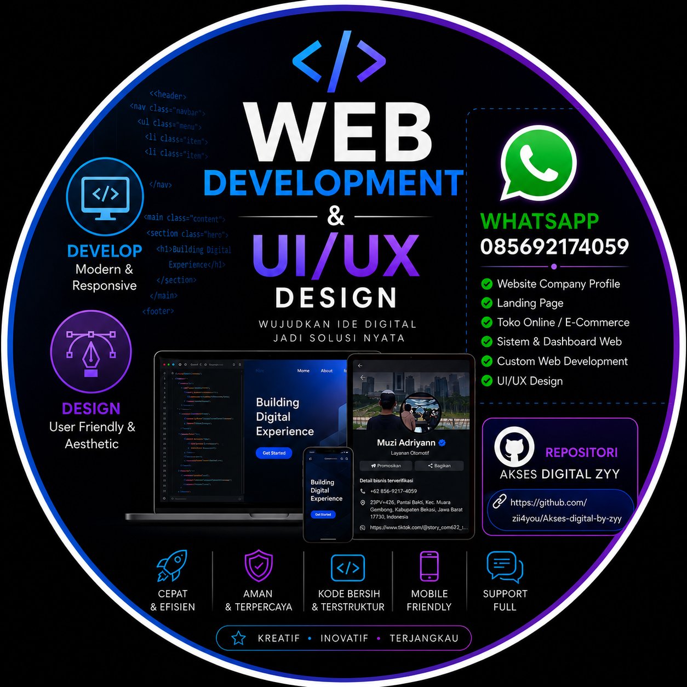

Membangun solusi digital yang aman, cepat, dan memukau. Mengubah ide menjadi karya berkelas dunia dari Bekasi.

Saya berusia 17 tahun, pelajar sekaligus pengembang web dengan minat mendalam di dunia teknologi, desain, dan keamanan siber.
Berasal dari Desa Pantai Bakti, Muara Gembong, Bekasi — tempat saya terus belajar, berinovasi, dan menciptakan solusi digital.
Saya berkomitmen menghasilkan karya yang rapi, aman, dan bermanfaat. Siap berkolaborasi untuk proyek apa pun!
HTML5
CSS3
JavaScript
Tailwind CSS
PHP
Laravel
Git
GitHub
Figma
UI/UX
Cyber Security
Desain Responsif
2024
Mengenal HTML, CSS, dan struktur dasar pembuatan website
2024 Akhir
Menguasai Tailwind CSS dan prinsip desain UI/UX yang baik
2025
Mempelajari JavaScript, Git, serta dasar-dasar keamanan siber
2026
Membangun situs portofolio, layanan digital, dan riset keamanan
Platform layanan pembuatan situs beranimasi penuh
Panduan teknologi yang mudah dipahami pemula
Simulasi pengujian dan penguatan keamanan sistem
Proyek Selesai
Jam Pelatihan
Apresiasi Resmi
Jam Belajar